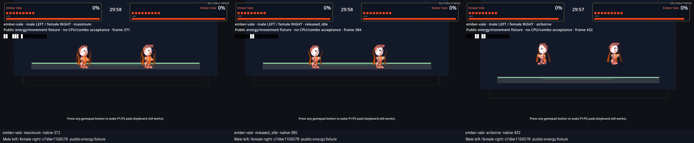
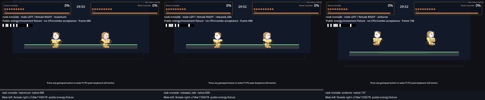
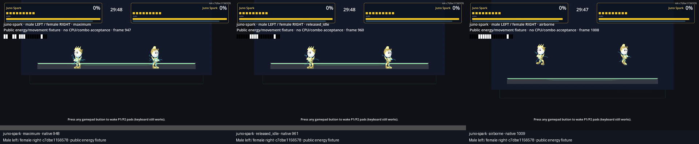
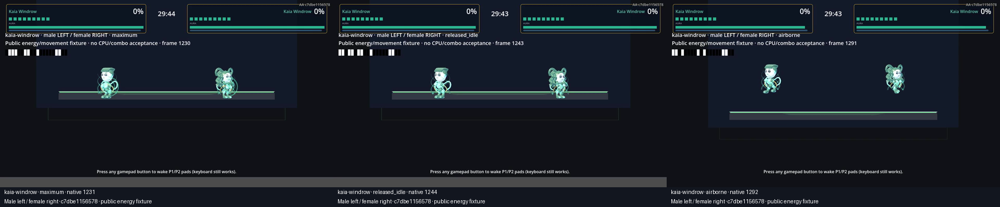
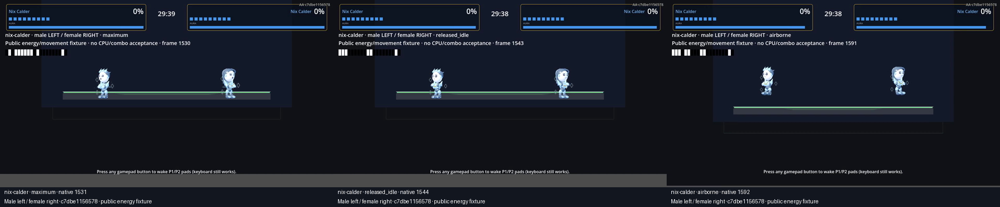
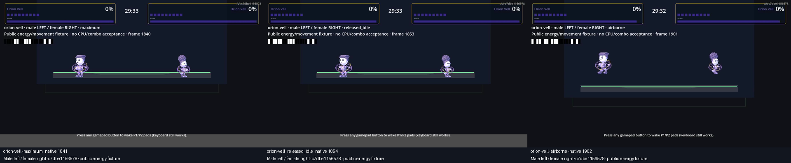
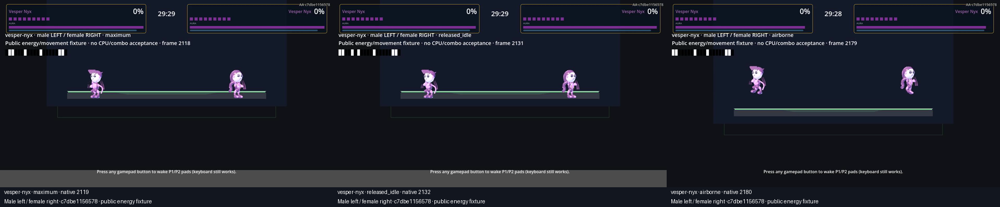
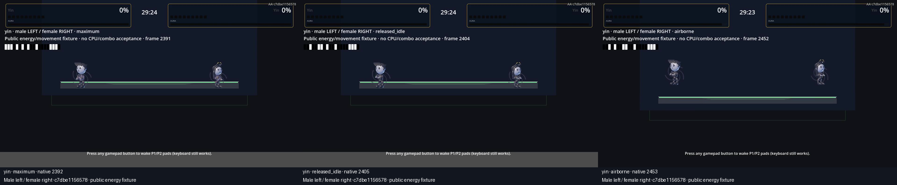
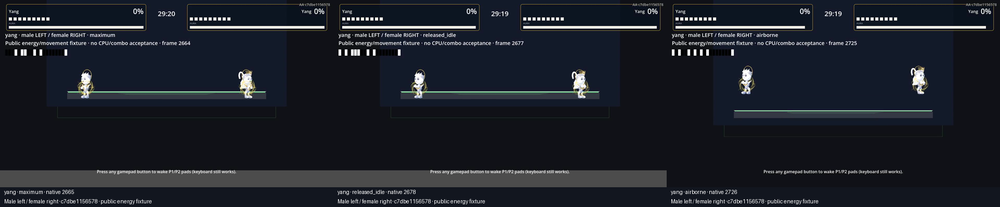

Shipping source 0e33ee436b78ebf67079ef044cd73845df9070d3. Latest energy video source c7dbe11565781ef8bcee6108ffad2ac9c956ebf0. All human/release gates false.
All18visible model presentations, public charge/movement/jump, original native audio and60fps output. NoCPU/contact/comboproof. Latest global-density update source-tested; native review pending.
ember-vale
rising_combustion

Larger upward tongues reach beyond shoulders/flanks; persistent ember outline is still restrained compared with charge ring.
Neutral-cast probe: 2 projectile hits / 0 projectile blocks; 0 strict follow-up pairs. Active CPU. Source c7dbe1156578 + driver diff.
Production choreography unfinished. Owner approval false.
Earlier source activeCPU gameplay 67ae813a9aaa
Historical footage, guard exclusions retained; does not prove newest aura or density treatment.
rook-ironside
seismic_fragments

Outer armor fragments are slightly clearer, but released aura remains faint against armor. Mass/weight acting needs production.
Neutral-cast probe: 3 projectile hits / 0 projectile blocks; 0 strict follow-up pairs. Active CPU. Source c7dbe1156578 + driver diff.
Production choreography unfinished. Owner approval false.
Earlier source activeCPU gameplay 67ae813a9aaa
Historical footage, guard exclusions retained; does not prove newest aura or density treatment.
juno-spark
branching_current

Branch arcs extend outside hands and waist; recognizable electrical corona is clearer, still small at camera scale.
Neutral-cast probe: 1 projectile hits / 0 projectile blocks; 0 strict follow-up pairs. Active CPU. Source c7dbe1156578 + driver diff.
Production choreography unfinished. Owner approval false.
Earlier source activeCPU gameplay 67ae813a9aaa
Historical footage, guard exclusions retained; does not prove newest aura or density treatment.
kaia-windrow
helical_wind

Wider wind ribbons wrap outside opaque torso; silhouette remains visible. Full-body wind footwork remains candidate.
Neutral-cast probe: 1 projectile hits / 0 projectile blocks; 0 strict follow-up pairs. Active CPU. Source c7dbe1156578 + driver diff.
Production choreography unfinished. Owner approval false.
Earlier source activeCPU gameplay 67ae813a9aaa
Historical footage, guard exclusions retained; does not prove newest aura or density treatment.
nix-calder
faceted_growth

Crystal facets now project beyond torso/legs, but subtle at camera scale; fracture acting needs refinement.
Neutral-cast probe: 1 projectile hits / 0 projectile blocks; 0 strict follow-up pairs. Active CPU. Source c7dbe1156578 + driver diff.
Production choreography unfinished. Owner approval false.
Earlier source activeCPU gameplay 67ae813a9aaa
Historical footage, guard exclusions retained; does not prove newest aura or density treatment.
orion-vell
tilted_orbits

Broader elliptical orbit is visible outside torso/feet; gravity body mechanics remain candidate.
Neutral-cast probe: 2 projectile hits / 4 projectile blocks; 1 strict follow-up pairs. Active CPU. Source c7dbe1156578 + driver diff.
Production choreography unfinished. Owner approval false.
Earlier source activeCPU gameplay 67ae813a9aaa
Historical footage, guard exclusions retained; does not prove newest aura or density treatment.
vesper-nyx
phase_seams

Phase seams reach outside hips/head, remain quiet and intermittent; phase/evasive acting remains unfinished.
Neutral-cast probe: 2 projectile hits / 2 projectile blocks; 1 strict follow-up pairs. Active CPU. Source c7dbe1156578 + driver diff.
Production choreography unfinished. Owner approval false.
Earlier source activeCPU gameplay 67ae813a9aaa
Historical footage, guard exclusions retained; does not prove newest aura or density treatment.
yin
inward_absorption

Contrast rim improves inward spiral visibility slightly; persistent void envelope is still too subdued for confident power-fantasy review.
Neutral-cast probe: 1 projectile hits / 0 projectile blocks; 0 strict follow-up pairs. Active CPU. Source c7dbe1156578 + driver diff.
Production choreography unfinished. Owner approval false.
Earlier source activeCPU gameplay 67ae813a9aaa
Historical footage, guard exclusions retained; does not prove newest aura or density treatment.
yang
ordered_construction

Ordered outward shell and halo are clearer around head/torso; radiant construction body mechanics remain candidate.
Neutral-cast probe: 2 projectile hits / 0 projectile blocks; 0 strict follow-up pairs. Active CPU. Source c7dbe1156578 + driver diff.
Production choreography unfinished. Owner approval false.
Earlier source activeCPU gameplay 67ae813a9aaa
Historical footage, guard exclusions retained; does not prove newest aura or density treatment.